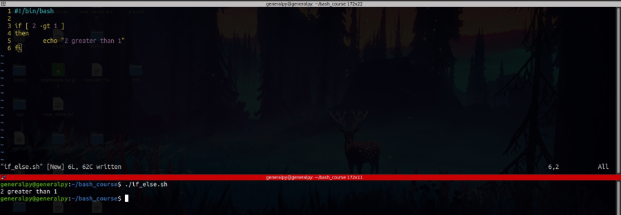
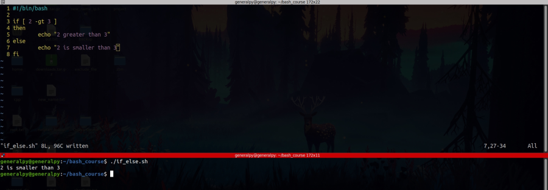
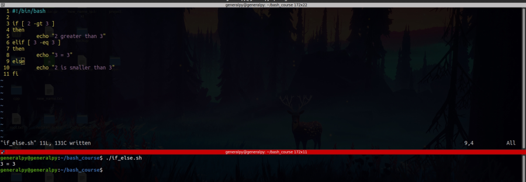
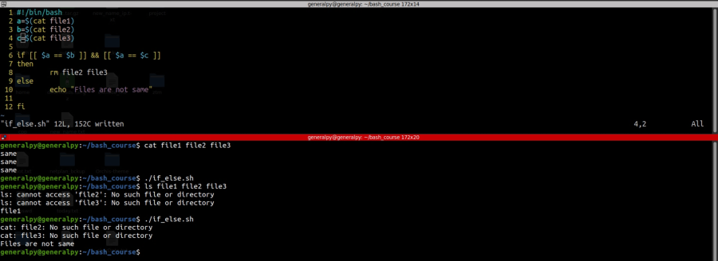

If statements are used to execute commands according to result of test conditions.
If is a complex statement which starts with if keyword and ends with fi keyword.
We also have elif and else inside if. elif allows us to specify another if condition if original if failed(elif = else + if) and else is statement if every condition fails(if + elif).
if can occur alone but elif and else need an if and no elif after else as else must be last statment. There can be n number of elif statements



We can use multiple testing conditions in if or elif conditions.
&& is used as and operator, returns true if all tests are true and || returns true if any 1 of the testing conditions are true.'
